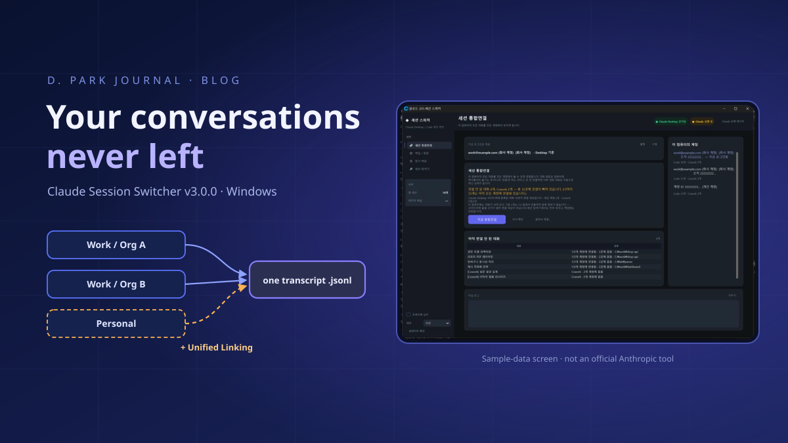
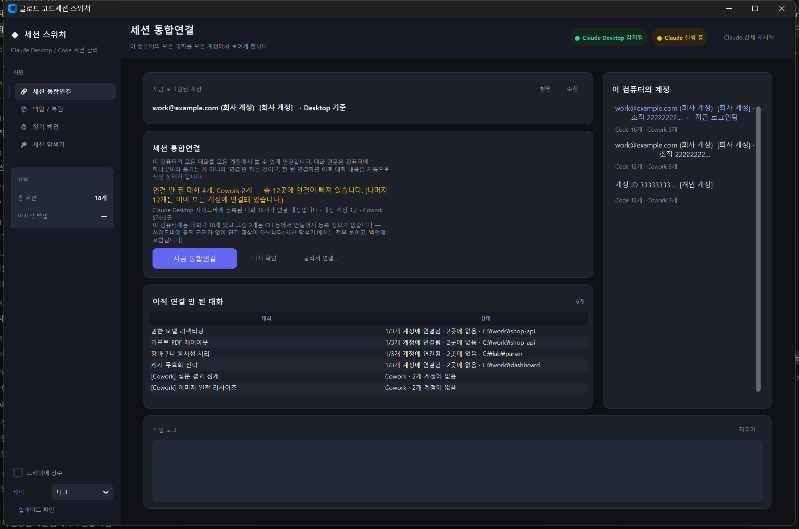
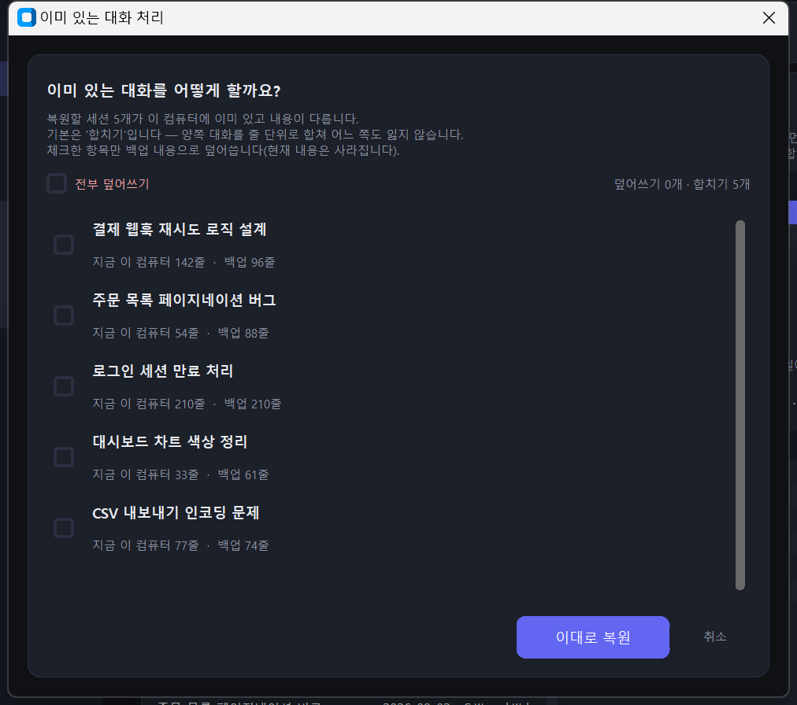
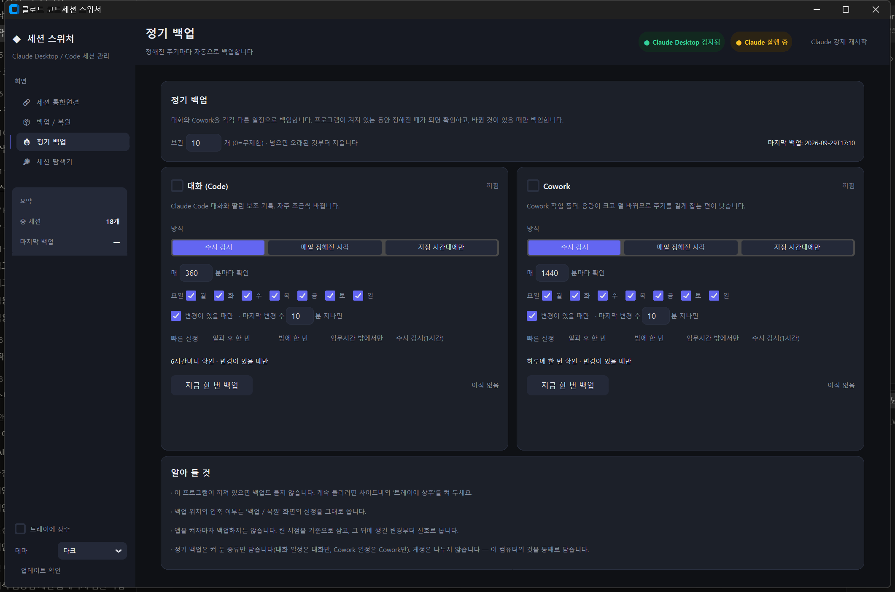
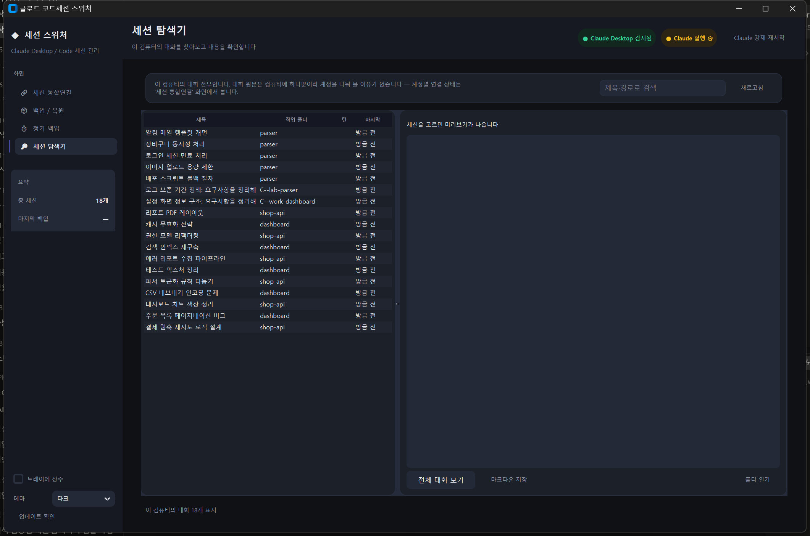
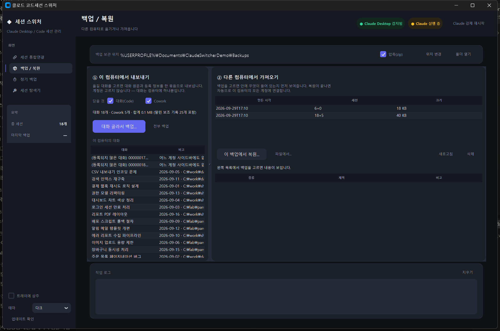
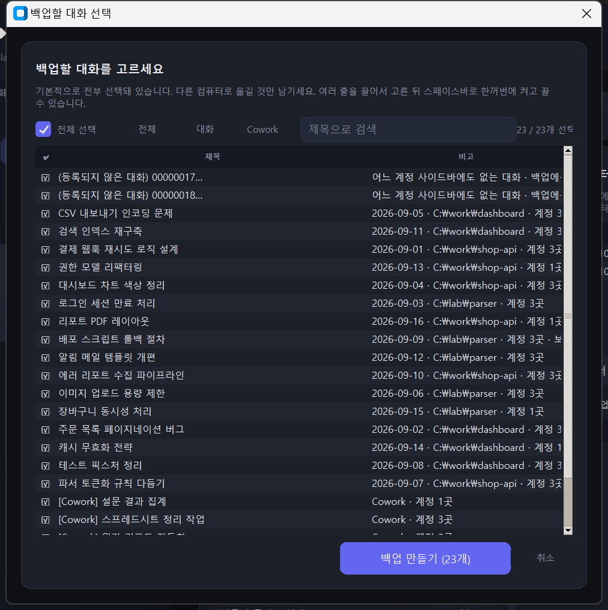

Claude Session Switcher
Use more than one Claude account and every switch makes yesterday's conversations vanish from the sidebar. I gave up for a while, trusting the common belief that a server was blocking it — but when I finally took it apart, there was only one copy of each conversation on the machine, and the account folders held nothing but pointers to it. From that one finding I built a Windows tool that links every conversation to every account and backs them up per computer so they can move to another PC. Here is what it does, where it helps, and what the accidents along the way taught me.

.jsonl) exists exactly once on the machine; what sits in an account folder is only a small registration file — a pointer — that references it by filename. Claude Session Switcher builds on that structure to ① link every conversation to every account with one click (Unified Linking), ② back conversations up per computer, not per account, so they can move to another PC, ③ run scheduled backups for conversations and Cowork on separate schedules, and ④ search and browse every conversation on the machine in one list. Pointer files are never rebuilt but copied byte for byte, and restores merge line by line instead of overwriting. It passes 172 automated checks, but the round trip to a second computer has not yet been verified in real use. Windows 10/11 only, and not an official Anthropic tool.
Switch accounts, and yesterday's conversations disappear
If you use Claude with a single account, you will never run into the problem this piece is about. But if, like me, you move between a work account and a personal account — and the work account itself belongs to more than one organization — and you live in Claude Desktop and Claude Code every day, a very specific kind of friction builds up. The moment you switch accounts, the session list in the sidebar is replaced wholesale. The conversation about payment-webhook retry logic I spent all of yesterday afternoon on vanishes without a trace when I log in with the other account. Go back to the original account and there it is, perfectly intact.
At first I shrugged it off: different account, different list, of course. But as it kept happening, questions formed. The conversations must be stored on my own machine — so why are they invisible from another account? And when I change computers, how do I take them with me? Written down, the symptoms came to four.
| What I saw | What was actually happening |
|---|---|
| I switched accounts and yesterday's conversations vanished from the sidebar | The conversation file was still there; the current account folder simply had no registration file pointing at it |
| There is no way to bring conversations to a new PC | Transcripts, registration records and Cowork data live in three different places, which makes copying by hand practically impossible |
| I cannot tell which account holds what | The only option is to switch accounts and count by eye |
| I backed up, restored, and overwrote newer conversations | A plain file copy cannot tell which side has moved further ahead |
What I built to fix these four is Claude Session Switcher (클로드 코드세션 스위처). It is a Windows desktop app written in Python with customtkinter, published on GitHub under the MIT license; the public release v3.0.0 went up on 29 September 2026. This piece gathers in one place what the tool is, what makes it different, where it is useful, and which mistakes I made while building it and what they taught me. Let me be clear up front: this is not an official Anthropic tool. Claude, Claude Desktop and Claude Code are Anthropic products; this app is a personal project built by observing how they store data locally.
Chapter 2. The Key FindingOne conversation — the accounts were only pointers
For a while this project ran on a false premise. Open a Claude Code session that had been moved to another account, and the screen said "This session may belong to another organization." Anyone reading that sentence naturally infers three things: the app knows which account owns the session; it checks that with a server; so no amount of fiddling with local files will help. Most of the community reached that conclusion, the author of the related GitHub issue wrote as much, and for a while I believed it too.
What overturned it was tedious work. I extracted Claude Desktop's Electron bundle (app.asar) and read through the code path that lists sessions and opens them, and I read the files piled up on a real PC — not a sample, but all of them. The storage turned out to have a completely different shape from what I had pictured.
.jsonl) per conversation on the machine; the local_<sessionId>.json in an account folder is merely a pointer that references it by filename. If the personal account's folder has no pointer, the conversation looks "missing" only in that account's sidebar. Redrawn for this site from the pointer diagram in the README.In short: a single Claude Code session is split across two different places. One is a registration file under %APPDATA%\Claude\claude-code-sessions\<accountId>\<orgId>\; each line in the sidebar corresponds to one such file. The other is the transcript under %USERPROFILE%\.claude\projects\ — the actual body of the conversation. The first is partitioned by account; the second has no notion of accounts at all.
The decisive fact was that the registration file contains neither an account ID nor an organization ID. I confirmed this by reading every one of the 143 registration files on a machine in daily use. The only basis the app has for deciding "whose session is this?" is the folder the file sits in. The two-level folders named with account and org UUIDs were not a lock but an address. The app reads the address that matches the logged-in account and never asks whose files are inside. I checked the transcript side as well: a byte-level scan of 984 transcript files totalling 1.10 GB found zero keys indicating organization ownership.
Two things follow immediately. First, the phrase "moving a conversation between accounts" is simply the wrong model. Nothing moves. You only plant a pointer in the account folder that lacks one — which is why I named the feature Unified Linking. Second, linking once is enough. Whichever account you continue the conversation in, the single transcript file just grows, so every other account sees the latest content automatically. There is never a reason to move it again.
The twist in the "another organization" message — and an honest caveat
So what was that message? Follow the session-opening path and everything — listCliSessions, readCliTranscript, resumeCliSession — is local file I/O, with no network call. When the native side reports a failure, it has exactly five reasons to choose from: running, liveness_unknown, workspace_untrusted, folder_missing and failed. There is no code for "organization mismatch", and a code that does not exist cannot be returned. So I read that message as a speculative fallback the web front end shows when something fails for another reason — its best guess at a cause.
When a session genuinely will not open, the cause has almost always been one of those five. My guess is that the common ones are a working folder that does not exist on that PC (folder_missing) or one that is not on the trusted list (workspace_untrusted), but I have not measured which occurs most often. What is certain is that mistaking the message for evidence was the heart of the misdiagnosis.
Four screens, one button
The Switcher turns that finding directly into features. It has four screens.
| Screen | What it does |
|---|---|
| Unified Linking | One button. Scans every account folder, finds every conversation not yet linked everywhere, and links it automatically (idempotent). |
| Backup / Restore | Per computer, not per account. Pick conversations and export them as a zip; import them on another computer. Restoring merges line by line by default. |
| Scheduled Backup | Backs up conversations (Code) and Cowork automatically, each on its own schedule. |
| Session Explorer | Every conversation on this PC in one list regardless of account — search, preview, full view, save as Markdown. |

The linking screen deliberately keeps three numbers apart: all conversations on this computer, those registered in Claude Desktop and therefore eligible for linking, and those with no registration record and therefore not eligible. Mix them and the "N unlinked" figure stops meaning anything. That did happen once, and on a real machine it produced 78 phantom entries out of 86 "unlinked". More on that in Chapter 7.
What is different
① Unified Linking — a union with no direction, and idempotent
The first design was a distribution model: pick one master account and spray its sessions onto all the others. Then something I said as a user overturned the design — there is no need to distribute anything; it only needs linking. Today's Unified Linking has no direction. It builds the union of all accounts and fills only what each one lacks. A conversation that existed only in account A and one that existed only in account B are both linked in one go. And it is idempotent: anything already linked is skipped, so when new conversations appear you just press the button again.
② Backups per computer, not per account
The backup screen has no account picker. That too existed at first and was removed. If there is only one copy of each transcript on the machine, the unit of backup should be the conversations on the computer, not an account. Back up per account and every conversation that is registered to no account falls out entirely. On my development PC, 8 of 46 conversations were registered to no account at all; an account-based backup would have lost those 8 for good.
The backup does not carry one registration file per account — it carries one representative. Once the restore finishes, Unified Linking spreads it to the remaining accounts.
claude_sessions_20260929_170717.zip ├── manifest.json ← what is inside (titles, sizes, counts) ├── transcripts/<cliSessionId>.jsonl ← the conversation ├── sidecars/<cliSessionId>/… ← its subagent logs and tool results ├── records/<cliSessionId>.json ← one representative pointer, byte for byte └── cowork/local_<uuid>.json + local_<uuid>/
③ Pointer files are never rebuilt — they are copied byte for byte
"Just plant a pointer" does not mean it is fine to fabricate one. An original registration file has 24 to 32 fields: title, creation and last-activity timestamps, working folder, archive flag, fork relationships and more. From information available outside, you can reconstruct at most eight. Synthesise one and the remaining 16 to 24 fields fall back to defaults; issue a new filename (sessionId) and the fork chain linked through forkedFromSessionId breaks, because the app looks up the parent by that ID directly and has no code to remap it.
Since there was no account field inside the registration file to change in the first place, the answer was simple: do not parse it, do not re-serialise it — copy the original file, filename and all. You do not need to understand what every field means. Copying the bytes is the surest way to preserve the fields you do not understand.
④ Restore merges by default instead of overwriting
The conversation you are restoring may already have moved further ahead on this computer. Overwrite it naively and the newest conversation is gone — which is exactly what an earlier version did. So now, if the same conversation exists and its content differs, the user is asked first, and the default is a line-by-line merge that loses nothing on either side. Overwriting happens only for items the user ticks explicitly, and the dialog shows "N lines on this PC · M lines in the backup" as the basis for the decision.

⑤ Scheduled backups with separate tracks for conversations and Cowork
Conversations change often and a little at a time; Cowork work folders are large and change rarely. Put both on one schedule and one of them is always wrong. So scheduled backup runs the two on entirely separate schedules. There are three modes: continuous watch, checking every N minutes; daily at a set time, as in "once after the workday"; and only within a time window, which supports windows that cross midnight, such as 19:00 to 08:00. On top of these, both share weekday selection, "only if something changed", and "only once N minutes have passed since the last change". That last option matters more than you would think: start copying a gigabyte while someone is mid-conversation and they will feel it.

The decision logic is isolated as a pure function that touches neither the clock nor the file system. It takes the current time, the last run and the last change as arguments and returns only whether to run now. That makes it possible to verify "does it fire properly at 11 p.m.?" without waiting until 11 p.m. — and 34 test cases do exactly that, covering weekdays, windows, midnight crossings, waiting for things to go quiet, and the independence of the two tracks. If a backup fails, the baseline is not advanced; advance it and the next check would conclude "no changes" and never retry.
⑥ A Session Explorer with no account picker
The Explorer shows every conversation on this computer in one list. You can search by title or working folder, preview, open the full conversation and save it as Markdown. Again there is no account picker. There used to be one, but choosing an account showed only part of the 46 conversations — the exact opposite of the Explorer's purpose, which is to find every conversation on this computer. Per-account link status is the linking screen's job.

⑦ What it never does — a fail-closed safety design
Because this tool handles people's conversation histories, I felt the list of things it does not do matters more than its features. These are the rules it follows today; most of them were born from real accidents.
| Rule | Why |
|---|---|
| Never deletes conversation files | The only deletion path is pruning old backups |
| Leaves a target account alone if it already holds its own original | An earlier version lacked this guard and silently deleted an original |
| Restore merges by default | So conversations newer than the backup are not lost |
| Never overwrites existing subagent logs | To protect records continued on this computer |
| Never fabricates a folder Claude Desktop did not create | Linking targets are limited to account/org pairs with a Code folder |
| Never backs up the moment the app starts | So repeated launches do not pile up backups and push out the retained ones |
Behind these sits one more attitude. Before any irreversible write it takes a snapshot, and if the snapshot itself fails, the write does not happen. No backup, no operation — the fail-closed principle. The tool also deals only with local files; the only thing that goes over the network is the app's update check.
⑧ 172 automated checks and measurements on real data
There are six test scripts with 172 checks in total. A script passes when its last line reads FAILS: [].
| Script | Checks | What it covers |
|---|---|---|
t_engine.py | 57 | Linking, backup, restore, conflict detection, kind filter, target eligibility, subagent logs |
t_schedule.py | 34 | Scheduled-backup decisions (weekdays, windows, midnight crossing, waiting for quiet, independent tracks) |
t_ui_flows.py | 55 | All four screens instantiated for real, end-to-end flows plus large-list performance |
t_app_boot.py | — | Full app boot and screen layout |
t_real_backup.py | 17 | A real backup of production data (reads real data, writes only to a temp folder) |
t_real_ui_speed.py | 9 | How fast the selection dialog opens on real data (freeze regression) |
Isolated tests run only after redirecting environment variables before import and, after import, every path constant each module holds to a temp folder — confirmed with assert. Real-data tests only read, export backups to a temp folder, and never restore. Running a genuine backup on real data gave these results.
| Item | Value |
|---|---|
| Scope | 49 conversations · 20 Cowork items · 2,018 subagent files |
| Source total → zip | 1,115 MB → 896 MB |
| Time taken | 64 seconds |
| Transcripts | Byte-identical |
| Changes to account folders | 0 files added or removed |
| Opening the selection dialog | 28+ seconds → 0.41 seconds for 1,015 items |
When to use it
A developer moving between work and personal accounts. The most common case. Mornings go to company repositories on the work account, evenings to a side project on the personal one — yet conversations continuing in the same working folder on the same computer show up separately in each account. Press Unified Linking once and every conversation is visible from both; after that, press it again only when new conversations appear.
One account with several organizations. Even with the same email, each organization gets its own folder under the account folder — which is also why switching organizations changes the sidebar. The Switcher treats each account/org pair as a separate linking target, so a conversation started in organization A can be listed in organization B as well.
Moving to a new computer. Transcripts, registration files and Cowork data are scattered across three places, so copying by hand almost always misses something. Create a backup zip on the old computer, carry it over by USB or cloud, and restore it on the new one with "From file...". Unified Linking runs automatically right after the restore, so the conversations attach to every account on the new computer at once. There is, however, an important caveat on this scenario, covered in the "Limitations" chapter.
Scheduled backup as insurance. For anyone whose conversation history is effectively their work log, this alone is reason enough. Keep the app in the tray, back up conversations every few hours and Cowork once a day, both with "only if something changed". Once the retention count is exceeded, the oldest backups are removed first.
Finding an old conversation and turning it into a document. A memory like "how did we settle that parser tokenisation rule?" usually starts with not knowing which account or which session it was in. Find it in the Explorer by title or working folder, and if needed save it as Markdown as raw material for a design document or a retrospective.
Chapter 6. Installation and UseFrom download to first link
Step 1 — Download. Grab ClaudeSessionSwitcher-v3.0.0.exe (about 32 MB) from the GitHub releases page and run it; there is no installer. Settings and logs are stored in %APPDATA%\ClaudeSessionSwitcherV2\. You need Windows 10/11 and Claude Desktop installed. To run from source instead, use Python 3.10 or later:
git clone https://github.com/UniverseMaker/Claude-Desktop-Application-Cowork-and-Code-Session-Transfer.git cd Claude-Desktop-Application-Cowork-and-Code-Session-Transfer pip install -r requirements.txt python main.py
Step 2 — Check the current account. When the app opens, the top of the linking screen shows the "currently logged-in account" as Claude Desktop sees it (Figure 2). If automatic detection got it wrong, correct it with Fix, and use Nickname to give an account a human-readable name. The "accounts on this computer" list on the right shows Code and Cowork counts per account.
Step 3 — Link. Press Link now. To link only some conversations, use Pick and link...; to just recompute the status, Check again. Then restart Claude Desktop — the Force-restart Claude button at the top right will do. From now on, logging in with another account shows the same list of conversations.
Step 4 — Back up. On the Backup / Restore screen, the left side exports and the right side imports. Choose what to include (conversations, Cowork) and press Pick conversations and back up... or Back up everything. Compression (zip) and the backup location are set here too.

%USERPROFILE%.Backing up a selection opens a picker. By default everything is selected; untick only what you want to leave out. It offers a kind filter (conversations / Cowork), title search, and drag-selecting several rows then toggling them all with the space bar. "Select all" applies only to the items currently visible after filtering — touching items that are not on screen would make changes the user never saw.

Step 5 — Restore. On the other computer, select a backup on the import side and it first shows what is inside. Press Restore from this backup... or From file...; if any conversations overlap, the dialog in Figure 6 appears, and leaving it as is means merge. Unified Linking runs automatically when the restore finishes. Finally, restart Claude Desktop.
Step 6 — Scheduled backup. On the Scheduled Backup screen, switch on the conversations and Cowork cards separately and pick a mode for each (Figure 8). Then turn on Stay in tray in the sidebar — if the program is closed, scheduled backups do not run.
Chapter 7. How It Works, in DepthWhy this works — the asymmetry between Cowork and Code
The most confusing thing early in development was this: Cowork (agent mode) work, copied folder and all, opened fine in another account — so why not Code sessions? The answer lay in an asymmetry between the two storage trees.
| Item | Cowork | Code |
|---|---|---|
| Where the registration file lives | Inside the account folder | Inside the account folder |
| Where the actual content lives | Inside the same account folder | In a shared area outside any account |
| What to copy when moving | Registration file + its whole content folder | The registration file only |
| Account fields in the registration file | Yes (accountName, emailAddress) | None |
| How to write it on move | Rewrite just those two fields | Copy byte for byte |
| Amount copied | Large (all work products) | Small (a few KB) |
Cowork keeps its content self-contained inside the account folder, so copying the folder wholesale just works; intuition and result agree. With Code, following intuition misses in one of two ways. Copy only the .jsonl and, with no registration file, it never appears in the sidebar. Hand-craft a registration file and it does appear — but broken, short of fields. It is not so much hard as a structure where intuition leads you astray.
I also checked how transcripts are found. The app walks every subfolder under projects\ looking for a filename, <cliSessionId>.jsonl. It does not matter if the working-folder value in the registration file differs from the folder the transcript actually sits in, so there is no need to reproduce the folder structure when moving a transcript. The working-folder value itself, however, is used for the trust check and for display, and if it is empty the app silently skips that registration file — so it must never be left blank.
The number of .jsonl files is not the number of conversations
Walk projects\ recursively and count .jsonl files, and the conversation count swells more than twentyfold. Measured on one PC during development, only 46 of 992 files were actual conversations; the other 946 were logs left by the subagents those conversations spawned (subagents\agent-*.jsonl). For a while, not knowing this, I believed the wrong figures of "995 sessions, 954 unregistered".
.jsonl files under projects\, 946 (95.4%) are subagent logs and only 46 (4.6%) are conversations. Redrawn as a donut from the pie chart in the README.Every subagent log sat inside its parent conversation's folder (zero orphans). So the Switcher counts conversations one level deep only. And when backing up, it carries subagent logs along with their conversation, because moving the conversation alone would drop everything it had delegated. On restore, subagent logs that already exist are never overwritten.
Always split both sides the same way
When merging or comparing two transcripts, both sides must be split into lines in exactly the same way. Python's str.splitlines() splits not only on newlines but also on characters such as
(LINE SEPARATOR). If only one side uses it, identical files are reported as "different". It actually happened: a single such character in a conversation put the two sides at 296 versus 298 lines. Left alone, users would have seen a groundless overwrite warning on every restore. Now both sides are split by one and the same helper function.
"The account I am logged in with" is harder than it sounds
At one point the app kept showing the first account even after I switched accounts in Claude Desktop. The cause: it was only reading %USERPROFILE%\.claude.json. What that file records is the Claude Code CLI login, which can differ from the Desktop login. Now the app reads the current account Desktop remembers from %APPDATA%\Claude\config.json and cross-checks it against the modification times of the files inside each account folder. It does not trust the folders' own modification times: the Switcher's own backups and restores were updating every account folder's timestamp, so it had been reading its own noise as a signal. And it does not present guesses as facts. Only accounts with direct evidence are shown by email; the rest are left to the account ID and the nickname the user gives them.
The worst failures are the silent ones
Most of this project's design principles did not come from a desk. They came from accidents in which data was damaged, or nearly was. It is a little embarrassing, but I am writing them down so the same mistakes are not repeated.
Synthesised registration files dropped fields. The early implementation wrote brand-new registration files: 8 fields where the original had 24 to 32. To the user it looks like "the session showed up" — it has a title, it opens — so only much later do you discover that forks have vanished or some metadata has been reset. Worse, the distribution path had already moved to transplanting originals while the restore path was still on the old synthesis approach: two entry points to the same problem with two different policies. Both paths are now unified as "transplant the original if there is one; synthesise only if there is none". Synthesis is not forbidden but a last resort, and the tool warns when it has had to use it.
A target account's genuine original was silently deleted. This was the most serious one. To prevent duplicate sidebar entries, I added logic that, after transplanting, deleted "other registration files pointing at the same conversation" — but that other file could be the target account's own genuine original. Now, just before transplanting, the tool looks at the target folder first, and if a non-synthesised original is there it neither transplants nor deletes. Originals and synthesised records are told apart by field count (24–32 versus at most 8) and the presence of the timestamp fields, with the threshold set at 9, just above the synthetic side. Misjudging an original as synthetic leads to deletion and must never happen; misjudging the other way merely means "tidied up a bit less", which can be recovered.
A restore overwrote the newest conversation. An earlier version overwrote conversation files wholesale by copying whole folders, so conversations newer than the backup quietly disappeared. All transcripts moved to line-by-line merging, which is today's "merge by default". Around the same time, the pre-overwrite snapshot function swallowed its exceptions on failure and the caller, never checking, overwrote anyway. Now, if a snapshot cannot be taken, that item is skipped rather than overwritten.
A plugin folder was mistaken for accounts. Directly under the Cowork tree sat a non-UUID folder, skills-plugin, and code that only looked at the two-level folder structure took it for four normal accounts and sprayed user sessions into the plugin store. Now a folder counts as an account only when both the account and the org positions are standard hyphenated UUIDs. Data that had already gone in was not deleted; deletion is the user's call.
The unlinked count was inflated. Account/org pairs that had only a Cowork folder and no Code folder were being counted as linking targets, so perfectly linked conversations were flagged as "missing" — 78 of 86 unlinked entries were phantoms. A Cowork folder may have been copied there by an older version of this very app, so it is no evidence that the pair is real. Limiting targets to pairs that actually have a Code folder fixed it.
Tests touched my real data. Twice. Each module held its own copy of the path constants, and only some were patched. Since then, every isolated test counts all modules that reference paths, overrides them all and confirms with assert before running. There was also the time backups ate 40 GB of disk: the default backup location was next to the executable, so backups piled up in every version folder until the C drive was down to 230 MB free and the executable would not even start. Backups now go under the Documents folder. And a bug where creating two backups in the same second silently overwrote the first zip was caught just before the public release, when one of two demo backups disappeared.
None (everything) and [] (nothing) — mix them and "I unticked everything, yet everything ran" is the result.What has not been verified yet
Listing only the good parts would not be fair. Here is what you should know before using the tool.
- Windows 10/11 only. Every measurement was made on Windows 11 with the Store (MSIX) install. The layout on macOS/Linux has not been examined.
- Claude Desktop must be restarted. Whether changed registration files are picked up without a restart has not been tested, so the tool conservatively asks for one.
- The cross-computer round trip has not yet been verified in real use. Backup, restore and linking within one machine have passed both isolated and real-data tests, but there is not yet any record of actually moving between two physical computers. If you use it to migrate, please keep a separate backup as well.
- Conversations without a registration record (created from the CLI) have no basis for being put in a sidebar, so they are not linking targets. They are included in backups and visible in the Explorer. Putting them in the sidebar would mean synthesising registration files — records this codebase deliberately treats as inferior — so that decision has been left open.
- Titles and last-activity times can go stale in other accounts, because of the guard that never touches a target's genuine original. A rule that updates them while keeping the guard is left for the next version.
- A new Claude Desktop version could shake these premises. The structure described here reflects a specific build at the time of investigation. If the separation between registration and transcript IDs, or the list of failure reasons, changes, so may the tool's behaviour.
Some things were also removed in v3.0.0. Shared-repository sync, usage analysis, CLI profiles and backup encryption, all present up to v2.0.0, were dropped as being too far from the tool's purpose. If you need them, the v2.0.0 release is still available.
Chapter 10. ClosingIt looked impossible because of a single line of text
Looking back, what consumed the most time in this project was not code but a false premise. One line — "may belong to another organization" — painted a picture of a server standing in the way, and inside that picture everything looked impossible. What erased it was no clever technique, just the dull work of reading every file and following the code to the end. Seen that way, the conversation had been in one place all along, and all that was missing was a pointer.
What I learned next was the distance between "possible" and "safe". Planting a pointer was easy. The hard part was not deleting someone's original, not overwriting the newest conversation, not losing fields I did not understand, and not presenting guesses as facts. Every one of those rules came after getting it wrong once.
If you move between several Claude accounts and feel the same friction, please give it a try, and let me know through GitHub issues if something goes wrong. Reports from anyone who has moved to another computer would be especially welcome — that is precisely the real-world verification this tool does not have yet.
- Repository: github.com/UniverseMaker/Claude-Desktop-Application-Cowork-and-Code-Session-Transfer
- Release v3.0.0: releases/tag/v3.0.0 (
ClaudeSessionSwitcher-v3.0.0.exe) - License: MIT
References
- Daeseung Park (UniverseMaker), "클로드 코드세션 스위처 · Claude Session Switcher" README (Korean and English). Storage layout, screens, how it works, safety rules, the 172 checks and the real-data backup measurement, limitations. All six screenshots were captured with fake demo data. github.com/UniverseMaker/…Session-Transfer
- Same repository, release notes "v3.0.0 — Unified Linking · per-computer backup · per-kind scheduled backup" (2026-09-29). The 78-of-86 phantom count, selection dialog from 28+ s to 0.41 s, 946 of 992
.jsonlfiles being subagent logs, the list of removed features. releases/tag/v3.0.0 - The project's internal development documents, "Core technique: moving Claude Code sessions between accounts" and "Development progress and problem solving" (unpublished). Exhaustive scans of 143 registration files, 190 Cowork registration files and 984 transcripts (1.10 GB); the five failure reasons; evidence grades and the "not verified" list; the accident log. The evidence grading in this piece follows that document's distinctions exactly.
- Same repository,
tests/README.md— check counts and isolation rules for the six test scripts, and the script that builds the demo data environment (3 accounts, 18 conversations, 5 Cowork items). - Claude, Claude Desktop and Claude Code are products of Anthropic. The descriptions of internal structure in this piece come from observing local files and the app bundle, not from official documentation, and reflect a specific build at the time of investigation.
Read next
Making “Show more options” the Default Right-Click Menu in Windows 11
A registry command that makes Windows 11 open the full, classic right-click menu (“Show more options”) instead of the simplified one — and the command that puts it back.
(Git Error) Git Submodule Branch Won't Apply
When the branch set in .gitmodules is not applied to a submodule: force it with git config, verify it, then update with git submodule update --remote.